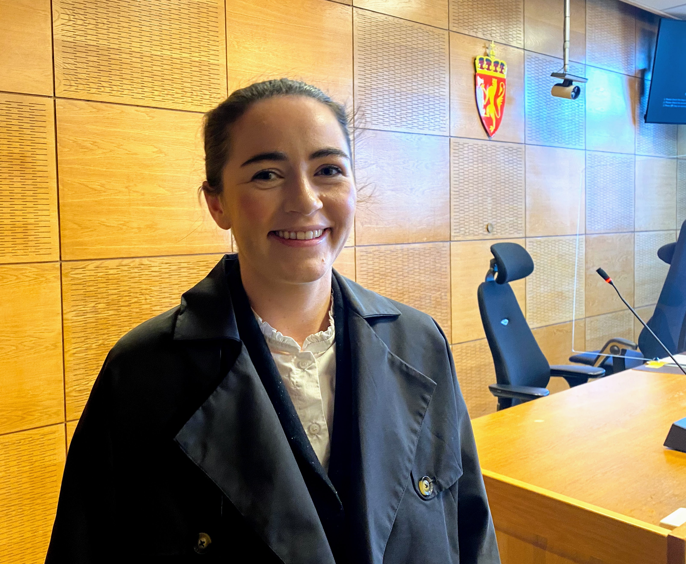

Truet politimann med balltre: – Bare prøv å komme inn, bare prøv!
Stavanger tingrett: 33-åringen som er tiltalt for fyllesykling i januar i fjor samt for å ha truet og spyttet på en politibetjent i Stavanger i september, tilsto i dag forbrytelsene. I lys av mannens kriminelle historie beregner både aktor og forsvarer rundt 30 dagers ubetinget fengselsstraff.

Den 17. september klokka 03.40 i fjor rykket en politimann ut til en leilighet på Storhaug etter meldinger om bråk i en bolig. Den tiltalte, en 33 år gammel mann, hadde blant annet knust et vindu.
Mannen slapp ikke politibetjenten inn i leiligheten sin. Han ropte «bare prøv å komme inn, bare prøv!» imens han dundret på døra med et balltre. Han skal ha vært svært beruset.
– Jeg opplevde bankingen som truende. Men jeg ble ikke redd. Jeg hadde på meg verneutstyr, sier politimannen.
Til slutt slapp mannen politibetjenten inn. Men da betjenten la ham i bakken, spyttet mannen ham i fjeset.
– Det var en vemmelig handling, sier politimannen.
Selv kjenner han ikke til den tiltalte, men det gjør andre i politiet. Mannen har blitt domfelt seks ganger før for liknende lovbrudd. Han har ved flere andledninger spyttet politi i ansiktet.
Rettssaken tok også for seg en episode fra tidligere i fjor, sent i januar. Halv elleve på kvelden syklet mannen i beruset tilstand i Haakon VIIs gate og krasjet i en personbil som sto parkert. Han påførte seg selv og bilen omfattende skader: Ansiktet hans ble lettere skadet; bilens frontlykt og -rute knuste.
Han skal ha syklet i motgående felt. Det ble tatt blodprøve av ham, der politiet konstaterte 1,52 i promille.
Straffes med ubetinget fengsel
Dommer Synne Lyngstad sier retten trygt kan jobbe ut ifra de opplysningene den har fått. Den tiltalte anerkjenner forholdene, og politibetjenten som vitnet «har ingen grunn til å lyve», ifølge påtalemyndighetene.
– Vold og trusler mot politiet skal straffes med ubetinget fengsel. Av hensyn for allmenheten må det gis alvorlig straff, sier dommeren.
Videre understreker hun hvor alvorlig spyttingen er med tanke på pandemien vi lever i for tida. Spytteepisoden forekom kun to dager før innstramminger av smittevern trådde inn i Stavanger.
– Politiet tilhører en samfunnsviktig rolle. Dette må tas med i beregningen, sier Lyngstad.
Aktor Ingrid Steinberg er enig.
– Det har dratt opp straffen med noen dager – rundt 10 prosent.

Hun tror dommen vil komme på mellom 24 og 36 dagers ubetinget fengsel.
Har et alvorlig rusproblem
Mannens forsvarer, Stian Kristiansen, legger vekt på dette momentet. Den tiltalte sier han i gjennomsnitt drikker tolv øl hver dag.
Forsvarer argumenterer videre:
– Når forsto han at det var politi på døra? Tiltalte bor i et meget belastet nabolag.
Tiltalte sier han har mange «fiender», og at han derfor hadde god grunn til å være skeptisk med å åpne døra.